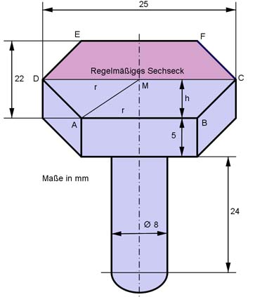

Aufgabe 28 Berechnen Sie das Volumen V des dargestellten Körpers.  Die Grundfläche des Sechseckprismas setzt sich aus dem Trapez ABCD und dem gleichgroßen Trapez DCFE zusammen. In dem regelmäßigen Sechseck gilt: MD = MA = AB = EF = r r = 25 mm/2 = 12,5 mm Trapez ABCD: hTrapez = 22 mm/2 = 11 mm DC = 25 mm DC + EF 25 mm + 12,5 mm Trapezfläche ABCD = ----------- * hTrapez = ------------------- * 11 mm 2 2 hPrisma = 5 mm rZylinder = dZylinder/2 = 8 mm/2 = 4 mm V = 2 * Trapezfläche ABCD * hPrisma + Zylinder 25 mm + 12,5 mm V = (2 * ------------------- * 11 mm) * 5 mm + π * 4² mm² * 24 mm 2 V = 2062,5 mm³ + 1205,8 mm³ = 3 268,3 mm³